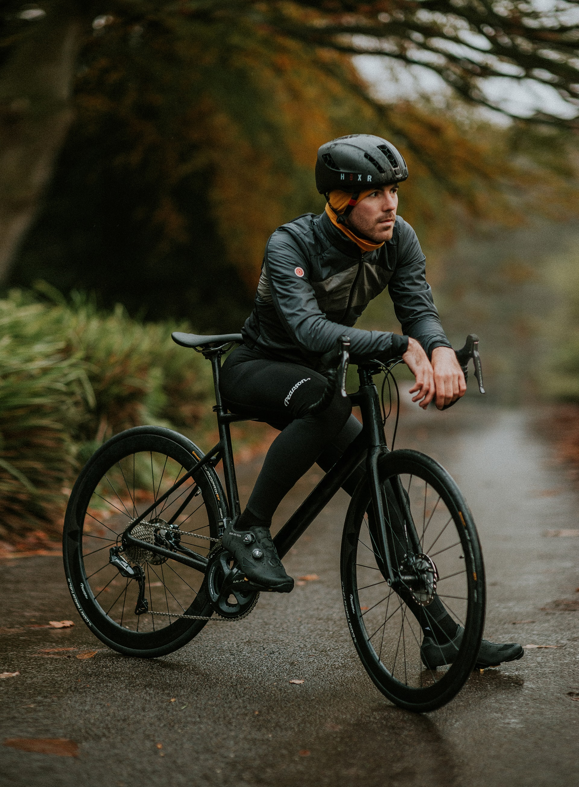
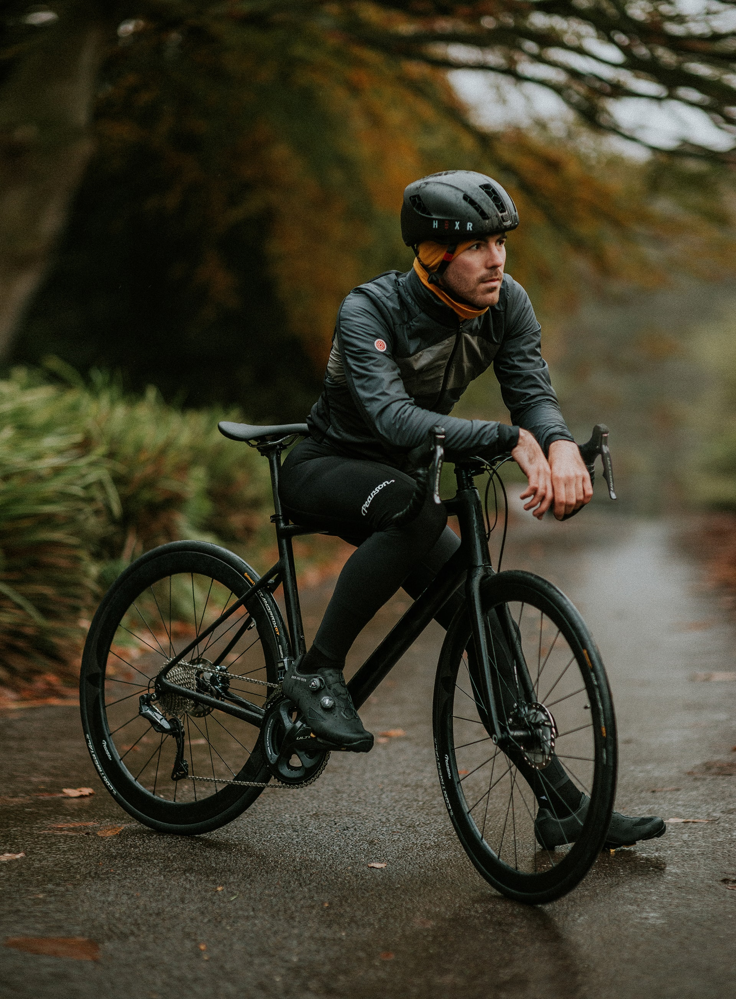

Mode of transport is a term used to distinguish between different ways of transportation or transporting people or goods. The different modes of transport are air, water, and land transport, which includes rails or railways, road and off-road transport
Land transport is the transport or movement of people, animals or goods from one location to another location on land. The two main forms of land transport can be considered to be rail transport and road transport. Several systems of land transport have been devised, from the most basic system of humans carrying things from place to sophisticated networks of ground-based transportation utilising different types of vehicles and infrastructure. The three types are human-powered, animal powered and machine powered. More information here
 
